Chapter 17. Widgets and their configuration
Widgets are a vital feature of the Early Warning, Alert and Response System (EWARS). They act as the core configurable data visualization units for features like Bulletins, Dashboards, Notebooks and Websites. Widgets are used to display text data, charts, maps and similar in dashboards, bulletins and websites.
There are 28 widgets in use in EWARS that fulfil different data visualization needs. Their differential distribution among associated features in the menu is illustrated in Table 17.1.
If you are reading this guide electronically, you can hover over and click on any widget in the table to expand it.
Table 17.1. The EWARS widgets
| Widgets | Associated feature in EWARS Menu | |||
|---|---|---|---|---|
| Dashboard | Bulletins | Notebook | Website | |
| 17.3 Row and Cell widgets | ✓ | ✓ | ||
| 17.4 Text widget in Dashboards | ✓ | ✓ | ✓ | |
| 17.5 Image widget in Dashboards | ✓ | ✓ | ||
| 17.6 Raw widget | ✓ | ✓ | ✓ | |
| 17.7 Info widget | ✓ | |||
| 17.8 Metrics widget | ✓ | ✓ | ||
| 17.9 Outbreaks widget | ✓ | ✓ | ||
| 17.10 Tasks widget | ✓ | |||
| 17.11 Assignments widget | ✓ | |||
| 17.12 Overdue reports widget | ✓ | |||
| 17.13 Documents widget | ✓ | |||
| 17.14 Recent submissions widget | ✓ | |||
| 17.15 Activity feed widget | ✓ | |||
| 17.16 Map widget | ✓ | ✓ | ✓ | ✓ |
| 17.17 Alerts map widget | ✓ | |||
| 17.18 Series chart widget | ✓ | ✓ | ✓ | ✓ |
| 17.19 Pyramid chart widget | ✓ | ✓ | ✓ | ✓ |
| 17.20 Category widget | ✓ | ✓ | ✓ | ✓ |
| 17.21 Table widget | ✓ | ✓ | ✓ | |
| 17.22 Menu widget | ✓ | |||
| 17.23 Text widget in Website Builder | ✓ | |||
| 17.24 Image widget in Website Builder | ✓ | |||
| 17.25 Enhanced table widget | ✓ | ✓ | ✓ | ✓ |
| 17.26 Enhanced map widget | ✓ | ✓ | ✓ | ✓ |
| 17.27 Carousel widget | ✓ | |||
| 17.28 Video widget | ✓ | |||
| 17.29 HTML (HyperText Markup Language) widget | ✓ | ✓ | ||
| 17.30 Document widget | ✓ | |||
| 17.31 Document list widget | ✓ |
 This c This c |
hapter is most valuable when it is read in conjunction with the dedicated chapters on Dashboards, Documents/bulletins, Notebooks and Website Builder. |
The topics set out how to add widgets to the associated menus and select periods for them.
17.1 How to add widgets
Different widget options are available under different features, but the same configuration rules apply across similar widgets.
17.1.1 Adding a widget to a bulletin
All widgets are available in the add widget drop-down menu in bulletins.
Select Menu > Document Templates > click on New at the top right-hand corner of the screen.
Click on the Template tab > place the cursor where you want to insert the widget > select a widget (e.g. series widget) from the
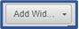
drop-down menu in the toolbar, and the widget is added, as shown below:
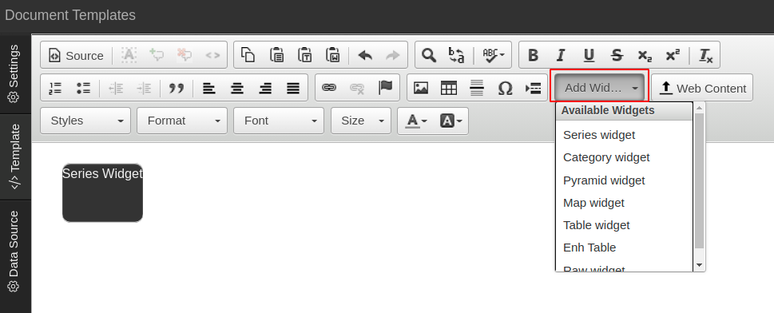
17.1.2 Adding a widget to a dashboard
- Select Menu > Dashboards > click on Create New at the top right-hand corner of the screen.
In a dashboard, widgets cannot be dragged directly into an empty space; they can only be dragged onto an empty row. So the first step is to drag a row into the empty space. All the widgets are listed in the left-hand column.
- Drag and drop a Row widget from the left-hand column to the middle section > click on the expand
 icon to expand a widget category (e.g. Chart Component) > drag a widget (e.g. Category Chart) onto a row, and the widget is added, as shown below:
icon to expand a widget category (e.g. Chart Component) > drag a widget (e.g. Category Chart) onto a row, and the widget is added, as shown below:
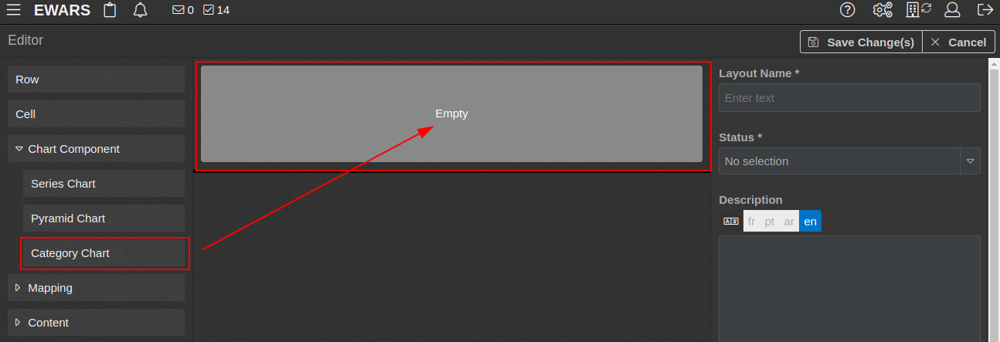
17.1.3 Adding a widget to a website
In Website Builder, widgets cannot be dragged directly into an empty space; they can only be dragged onto an empty row. All the widgets are listed in the left-hand column.
Select Menu > Website Builder. Click on the edit
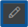
icon next to any of the websites.Drag and drop a Row widget from the left-hand column to the right-hand side > click on the expand
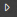
icon to expand the widget category (e.g. Chart Component) > drag a widget (e.g. Series Chart) onto a row, and the widget is added, as shown below:
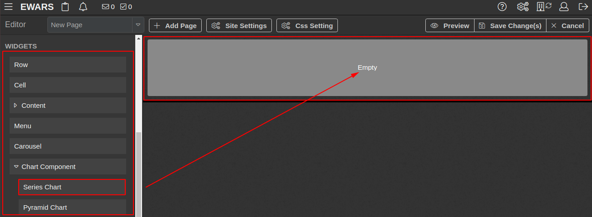
17.1.4 Adding a widget to a notebook
Select Menu > Notebooks > My Notebooks > click on Create Notebook. All the widgets are listed in the left-hand column.
Drag and drop a widget (e.g. Pyramid Chart) from the left-hand column to middle section, and the widget is added, as shown below:
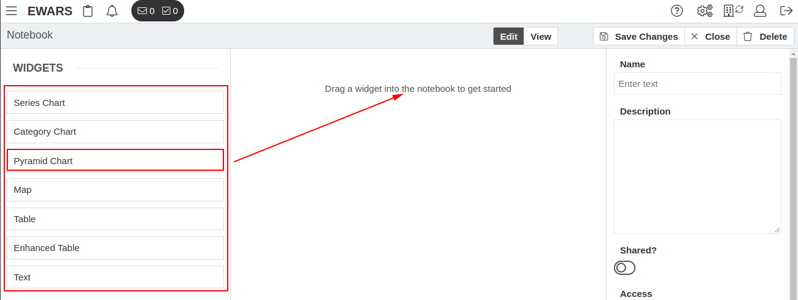
17.2 How to select time period/date range in widgets
Most of the widgets – including raw widget, map widget, series chart widget, pyramid chart widget, category chart widget and table widget – require you to set up a time interval or period.
Selecting a time period can be simple in some instances but more complex in others. Because it is vital element in all widgets, while many different options exist for selection, this section explains the time period or date range selection as a separate entity. The explanations below should help you to select the date range/time period easily in any particular widget where there is a date period component.
You can select and specify data intervals using the following period selection user interface:
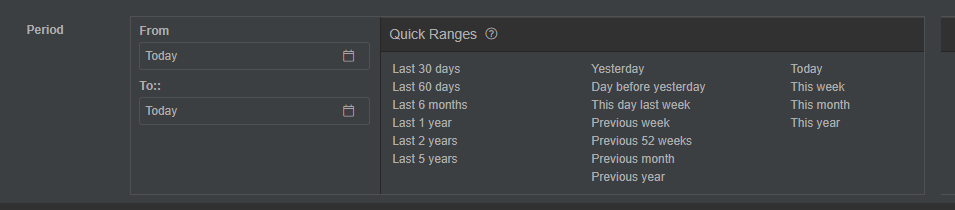
| You ca |
n check with your national or regional surveillance guidance for the epidemiological week (epi week) calculation. |
17.2.1 Selecting start and end dates using the EWARS calendar
To select start and end dates using the EWARS calendar, follow the steps below.
- Click on the calendar
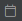
icon > select the year and month using the previous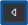
and next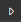
icons and select a date, as shown below:
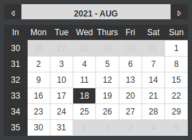
17.2.2 Selecting start and end dates using named options
To select start and end dates using named options, follow the steps below.
- Click on the calendar
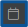
icon, and named options are listed, as shown below:
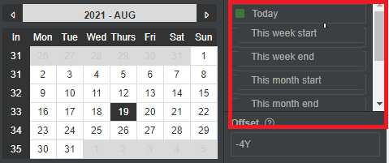
- Click on the named option to select it.
To help you understand the available named options, they are defined below, with examples.
Today: the current date: if you are configuring EWARS on 17 August 2021, it will consider the date to be 17 August 2021.
This week start: the start date of the current week: if you are configuring EWARS on (Tuesday) 17 August 2021, it will consider the start date to be (Monday) 16 August 2021.
This week end: the end date of the current week: if you are configuring EWARS on (Tuesday) 17 August 2021, it will consider the date to be (Sunday) 22 August 2021.
This month start: the start date of the current month: if you are configuring EWARS on 17 August 2021, it will consider the date to be 1 August 2021.
This month end: the end date of the current month: if you are configuring EWARS on 17 August 2021, it will consider the date to be 31 August 2021.
This year start: the start date of the current year: if you are configuring EWARS on 17 August 2021, it will consider the date to be 1 January 2021.
This year end: the end date of the current year: if you are configuring EWARS on 17 August 2021, it will consider the date to be 31 December 2021.
 Note: the following named options are only available in Document Templates.
Note: the following named options are only available in Document Templates.
Document week start: the start date of the week for which the document is published. Let’s assume that a bulletin is prepared for Week 30 of 2021: 26 July to 1 August. In this case, it will consider 26 July 2021 to be the document week start.
Document weekend: the end date of the week for which the document is published.
Document month start: the start date of the month for which the document is published.
Document month end: the end date of the month for which the document is published.
Document year start: the start date of the year for which the document is published.
Document year end: the end date of the year for which the document is published.
17.2.3 Using offset for named options
Using offset, you can add or subtract days, weeks, months or years from the selected named option date. For example, if you set offset as -1D, it subtracts 1 day from the date of the named option, as shown below:
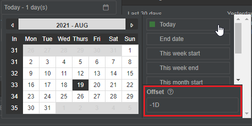
- Click on in the From field > select a named option > enter the Offset value (e.g. -1D).
To help you understand the available Offset options, they are defined below, with examples.
-1Y: 1 year back from the date of the selected named option.
-2M: 2 months back from the date of the selected named option.
-3D: 3 days back from the date of the selected named option.
-4W: 4 weeks back from the date of the selected named option.
1Y: 1 year ahead of the date of the selected named option.
2M: 2 months ahead of the date of the selected named option.
3D: 3 days ahead of the date of the selected named option.
4W: 4 weeks ahead of the date of the selected named option.
17.2.4 Selecting start and end dates using quick ranges
- Click on a desired Quick Range (e.g. Previous week). Both start and end dates are selected, as shown below:
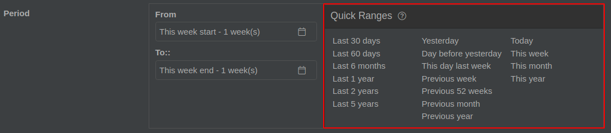
To help you understand the available quick ranges, they are defined below, with examples.
Last 30 days: 30 days before the current date: if you are configuring EWARS on 17 August 2021, it will consider the start date to be 18 July 2021 and the end date to be 17 August 2021.
Last 60 days: 60 days before the current date.
Last 6 months: 6 months before the current date: if you are configuring EWARS on 17 August 2021, it will consider the start date to be 17 Feb 2021 and the end date to be 17 August 2021.
Last 1 year: 1 year before the current date: if you are configuring EWARS on 17 August 2021, it will consider the start date to be 17 August 2020 and the end date to be 17 Aug 2021.
Last 2 years: 2 years before the current year.
Last 5 years: 5 years before the current year.
Yesterday: the date of the day before the day you are viewing the widget: if you are configuring EWARS on 17 August 2021, it will consider the start and end dates to be 16 August 2021.
Day before yesterday: if you are configuring EWARS on 17 August 2021, it will take start and end dates to be 15 August 2021.
This day last week: the current day of the last week: if you are configuring EWARS on 17 August 2021, it will consider the date to be 10 August 2021.
Previous week: the week before the current week: if you are configuring EWARS on 17 August 2021, it will consider the start date to be (Monday) 9 August 2021 and the end date to be (Sunday) 15 August 2021.
Previous 52 weeks: 52 weeks before the current week: if you are configuring EWARS on 17 August 2021, it will consider the start date to be 15 August 2020 and the end date to be 15 August 2021.
Previous month: the month before the current month: if you are configuring EWARS on 17 August 2021, it will consider the start date to be 1 July 2021 and the end date to be 31 July 2021.
Previous year: the year before the current year: if you are configuring EWARS on 17 August 2021, it will consider the start date to be 1 January 2020 and the end date to be 31 December 2020.
Today: the current date: if you are configuring EWARS on 17 August 2021, it will consider both the start and end dates to be 17 August 2021.
This week: the current week: if you are configuring EWARS on 17 August 2021, it will consider the start date to be (Monday) 16 August 2021 and the end date to be (Sunday) 22 August 2021.
This month: the current month: if you are configuring EWARS on 17 August 2021, it will consider the start date to be 1 August 2021 and the end date to be 31 August 2021.
This year: the current year: if you are configuring EWARS on 17 Aug 2021, it will consider the start date to be 1 January 2021 and the end date to be 31 December 2021.
| If you |
are developing a weekly bulletin, always keep the EWARS calendar set as Document week start: Document week end. If you are making a daily dashboard, keep the EWARS calendar as Today for both entries. |
The following topics give details about individual widgets.
17.3 Row and cell widgets
Available in: Dashboards, Website Builder
Row widget is a container widget. It can hold static and dynamic widgets such as text, image, video, carousel, HTML, charts and others. You can add multiple rows. Rows divide the page into multiple horizontal segments. You can drag and drop any widget of your choice onto a row.
Cell widget divides the row widget into vertical segments. To add a cell widget, drag it onto a row. You can add multiple cell widgets to a row. You can drag and drop any widget of your choice onto the cell.
Right-click on the row or cell you have dragged to view more options, as shown below:
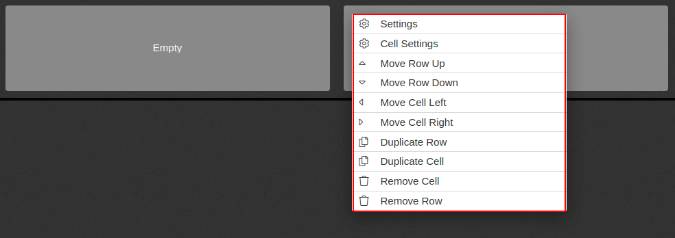
The highlighted part above can be seen once you right-click the row or cell. You can move rows or cells, duplicate them or remove them using these options.
If you click on Cell Settings, a cell editor screen opens, in which you can define the width of the cell (%), and give a description of the cell and cell classes.
17.4 Text widget in Dashboards
Available in: Dashboards
The text widget in Dashboards is used to display textual content. The screenshot below is an example of what the text widget looks like following configuration in a notebook or dashboard:
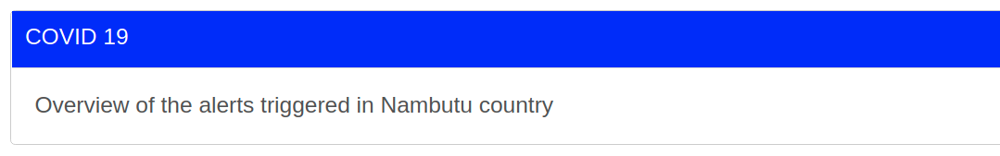
To add a text widget to a dashboard and configure it, follow the steps below.
Select Menu > Dashboards > click on Create New at the top right-hand corner of the screen.
Drag and drop a Row widget > click on the expand
icon to expand the Content category > drag and drop a Text widget onto the row > click on it, and the widget editor opens, as shown below:
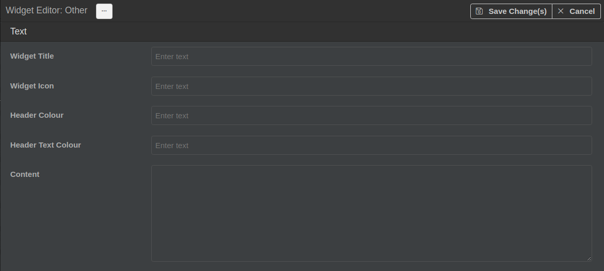
- Populate the fields as follows.
Widget Title: enter a title for the widget (e.g. “Measles Case Study”). This is visible at the top of the screen.
Widget Icon: enter a relevant widget icon. The icon is visible just before the widget title.
| To cha |
nge and incorporate the widget icons, refer to websites like that of the United Nations Office for the Coordination of Humanitarian Affairs (OCHA): https://brand.unocha.org/d/xEPytAUjC3sH/icons |
Header Colour: enter the colour name or hex colour code for the background colour of the header (e.g. (orange)). To obtain the hex code, refer to any colour-code picker website.
Header Text Colour: enter the colour name or hex colour code for the text colour of the header (e.g. #fff). To obtain the hex code, refer to any colour-code picker website.
Content: enter a relevant paragraph of text.
Click on Save Change(s).
For more information on Text widget in Website Builder, refer to topic 17.23 Text widget in Website Builder.
17.5 Image widget in Dashboards
Available in: Dashboards
Use an image widget when you want to add an image in Dashboards. It also allows you to add a heading to the image if needed. Fig. 17.1 shows an example of what the image widget looks like on a dashboard with and without a heading.
Fig. 17.1. A configured image widget, with and without a heading
To configure an image widget, follow the steps below.
Select Menu > Dashboards > click on Create New at the top right-hand corner of the screen.
Drag and drop a Row widget > click on the expand
icon to expand the Content category > drag and drop an Image widget onto the row > click on it, and the widget editor opens, as shown below:
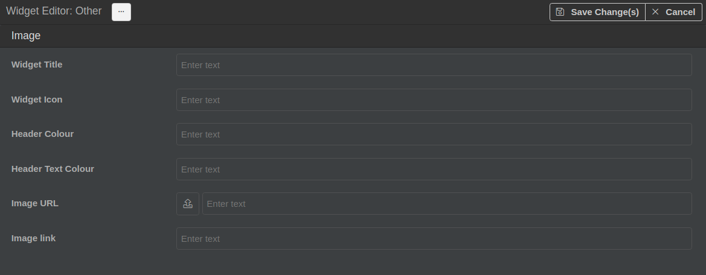
- Populate the fields as follows.
Widget Title: enter a title for the widget (e.g. “Ministry of Health of Nambutu”). This is visible at the top of the screen.
Widget Icon: enter a relevant widget icon. The icon is visible just before the widget title. (If you want to change the icon, refer to the Tip in topic 17.4 Text widget).
Header Colour: enter the colour name or hex colour code for the background colour of the header (e.g. (orange)).
Header Text Colour: enter the colour name or hex colour code for the text colour of the header (e.g. #fff).
Image URL [Mandatory]:
Either click on the upload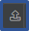
icon to upload an image saved on your computer. It is uploaded as web content, and the newly created universal resource locator (URL) is populated automatically in the textbox beside it. The recommended size for an image is approximately 2GB. You should make sure that the image is already properly sized for display on the dashboard.
Or copy and paste an existing URL or type the URL manually in the textbox. The address specified must resolve to a publicly accessible image. The image file is not copied to EWARS but remains in its source location. EWARS fetches it when displaying it on the page.
| Note: there is an inherent risk in this approach – if you choose an URL for a location that you don’t control (for example, if you reference an image on another website or via a search engine), if that image is ever removed by its owner, it will disappear from EWARS. |
- Image link: enter the URL for a website/webpage that is to be opened when the link is clicked (e.g. http://who.int). Once the user clicks on the image, a new tab is opened and the user is redirected to the specified URL.
- Click on Save Change(s).
For more information on Text widget in Website Builder, refer to topic 17.24 Image widget in Website Builder.
17.6 Raw widget
Available in: Dashboards, Bulletins and Website Builder
The raw widget allows the user to show an indicator value in a well defined format. The raw widget available in Dashboards is different from the one available in Bulletins and Website Builder, so its configuration is explained separately.
17.6.1 Raw widget in Dashboards
Available in: Dashboards
This section assumes that you have already created a dashboard for your account, to which you can now start adding widgets for configuration. Refer to Chapter 19. Dashboards for more information on how to create a dashboard.
Fig. 17.2 shows an example of a configured raw widget in a dashboard.
Fig. 17.2. A configured raw widget in a dashboard
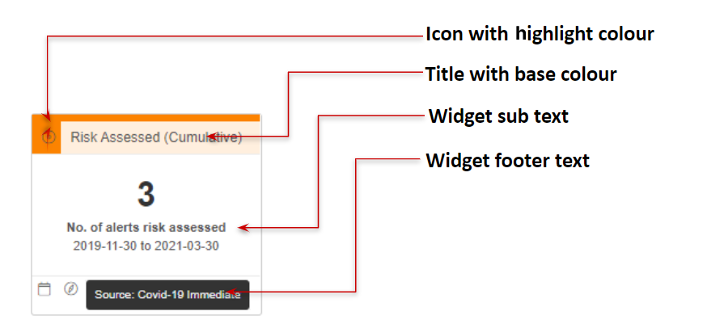
To configure the raw widget, follow the steps below.
Select Menu > Dashboards > click on Create New at the top right-hand corner of the screen.
Drag and drop a Row widget > click on the expand
icon to expand the Other category > drag and drop a Raw widget onto the row > click on it, and the widget editor opens, as shown below:
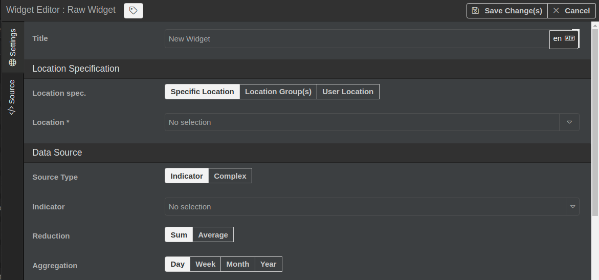
- Populate the fields as follows.
Title: enter a title for the widget. This is visible at the top of the screen.
Location Specification: you can limit the source of data for the indicator used in the widget by specifying the location source and its sub-options:
Either set Location Specification as Specific Location: select a location in the drop-down menu (e.g. Nambutu), and data reported from a specific location are considered.
Or set Location Specification as Location Group(s): select a location group from the drop-down menu (e.g. NGO A). If you want several location groups to be considered, select more from the drop-down menu (e.g. NGO B, NGO C).
Or set Location Specification as User’s Location. Once set as this option, only data reported from the User’s Location are considered.Data Source: you can set data source as Indicator for a single indicator, or as Complex to generate a Composite indicator.
Either set Source Type as Indicator > select the Indicator whose values you want to display in the chart from the drop-down menu > set Reduction as Sum or Average to calculate the indicator values
Or set Source Type as Complex > enter an arithmetic formula in the Formula textbox > click on Add Variable > click on the edit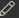
icon > enter the Variable Name (e.g. “Consultations 5 and over”) > select Consultations 5 and over from the Indicator drop-down menu.Aggregation: select the aggregation period (e.g. Week).
Source period: select the date range in the From and To drop-down menus or directly from the Quick Ranges menu. The default From and To dates are today.
Value Text Size: enter the font size.
Number Formatting: select how numbering need to be formatted (e.g. 0.00).
Prefix: if a prefix is needed, add it here (e.g. “AIM”) to indicate a location. Prefix is an optional field: you may leave it blank if not needed.
Suffix: if a suffix is needed, enter it here (e.g. “AWD”) to indicate the disease. Suffix is an optional field: you may leave it blank if not needed.
Value Colouring: once enabled, you can add colours to your numbers, depending on where they fit in a range (e.g. any value in the range 0–10 will be displayed in green, any value in the range 100–1000 will be displayed in red). To add a colour range, click on the add
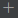
icon > enter min and max values for the range and specify the colour via the colour picker drop-down menu, as shown below:
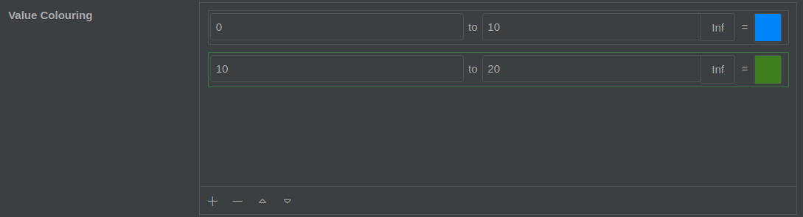
Value Mapping: once enabled, you can show a mapped value or text instead of the original value (e.g. if the original value is 0 you may select to display it as Null, range 0–10 as Low and range 100–1000 as High). Click on the add icon > enter min and max values for the range and specify the mapped value. Each value mapping range has two number inputs and a textbox for a mapped value.
Base Colour: enter the name of the base colour: the colour in the background of the title (e.g. “white”).
Highlight Colour: enter the name of the highlight colour: the colour in the top border of the raw widget, which surrounds the icon (e.g. “yellow”).
- Icon: Enter the icon name. The icon is displayed at the top of the widget, as shown below:
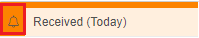
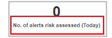
- Widget footer text: enter widget footer text to be displayed as below, once the web user moves the mouse pointer over the icon:
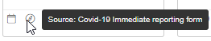
- Click on Save Change(s).
17.6.2 Raw widget in Bulletins and Website Builder
Available in: Bulletins and Website Builder
This section assumes that you have already created bulletins/document templates or a website for your account, to which you can now start adding raw widgets for configuration. Refer to Chapter 21. Documents and Document Templates and Chapter 22. Website Builder for more information on how to create these.
Fig. 17.3 shows an example of the configured raw widget in a bulletin.
Fig. 17.3. A configured raw widget in a bulletin
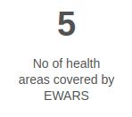
To configure the raw widget, follow the steps below.
Select Menu > Document Templates > click on New at the top right-hand corner of the screen.
Click on the Template tab > place the cursor where you want to insert the widget > select Series widget from the drop-down menu visible in the toolbar, and the widget is added. Double-click on it, and the widget editor opens, as shown below:
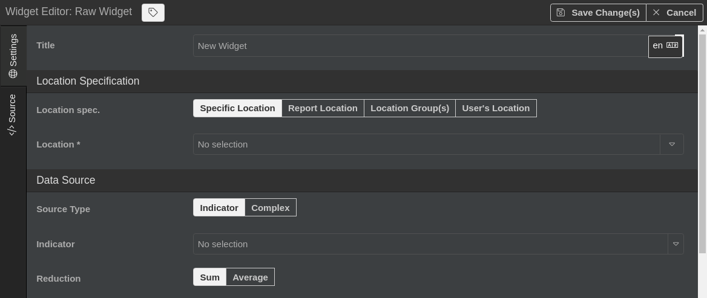
- Populate the fields as follows.
- Title: enter a title for the widget. This is visible at the top of the screen.
- Location Specification: you can limit the source of data for the indicator used in the widget by specifying the location source and its sub-options:
Either set Location Specification as Specific Location: select a location via the location drop-down menu (e.g. Nambutu), and the data reported from a specific location are considered.
Or set Location Specification as Report Location: the data reported from the location set in the location specification under general settings are considered.
Or set Location Specification as Group(s): select a location group from the drop-down menu (e.g. NGO A) > set Group Output as Aggregate. If set as Aggregate, the system performs group-wide aggregation of the data and displays data for each group. If set as Individual, the system does location-wide aggregation of the data and displays data for each location of the group.
Or set Location Specification as User’s Location. Once set as this option, only data reported from the User’s Location are considered.
Data Source: you can set Source Type as Indicator for a single indicator, or as Complex to generate a calculated value:
Either set Source Type as Indicator > select the Indicator whose values you want to display in the chart from the drop-down menu > select Reduction as Sum or Average to calculate the indicator values.
Or set Source Type as Complex > enter an arithmetic formula in the Formula textbox > click on Add Variable > click on the edit icon > enter the Variable Name (e.g. “Consultations 5 and over”) > select Consultations 5 and over from the indicator drop-down menu.Aggregation: select the aggregation period (e.g. Week).
Source period: select the date range in the From and To drop-down menus or directly from the Quick Ranges menu. Default From and To dates are today.
Number Formatting: select the formatting style of the value from the drop-down menu (e.g. 0.00).
Value Mapping: once enabled, instead of the original value, the mapped value is displayed. Click on the add icon > enter min and max values for the range and specify the mapped value. Each value mapping range has two number inputs and a textbox for a mapped value.
- Click on Save Change(s).
17.7 Info widget
Available in: Dashboards
The info widget is a special purpose widget that displays the current date and time (Fig. 17.4).
Fig. 17.4. A configured info widget, showing date and time
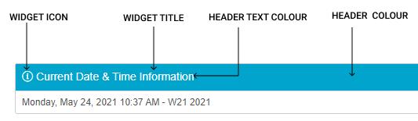
To configure an info widget, follow the steps below.
Select Menu > Dashboards > click on Create New at the top right-hand corner of the screen.
Drag and drop a Row widget > click on the expand
icon to expand the Other category > drag and drop an Info widget onto the row > click on it, and the widget editor opens, as shown below:
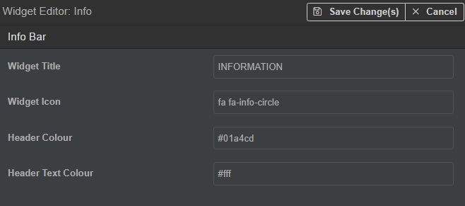
Populate the fields as follows.
Widget Title: enter a title for the widget (e.g. “Information”). This is visible at the top of the screen.
Widget Icon: enter a widget icon. The icon is visible just before the widget title. (If you want to change the icon, refer to the Tip in topic 17.4 Text widget.)
Header Colour: enter the colour name or hex colour code for the background colour of the header (e.g. (orange)).
Header Text Colour: enter the colour name or hex colour code for the text colour of the header (e.g. #030B0C).
- Click on Save Change(s).
17.8 Metrics widget
Available in: Dashboards, Website Builder
The metrics widget allows you to display a numerical value and its label in a specific format. You can select numerical values from a predefined set.
Fig. 17.5 shows examples of the configured metrics widget.
Fig. 17.5. A configured metrics widget in bar layout and tabular layout
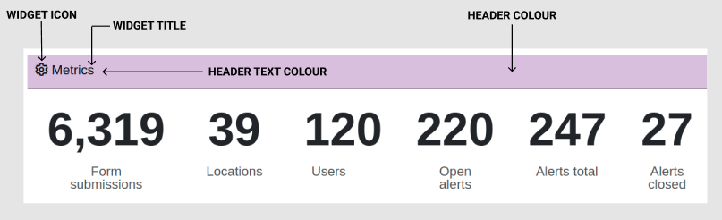
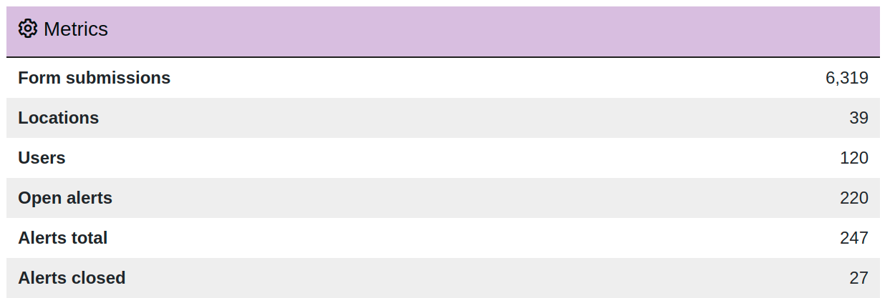
To configure a metrics widget, follow the steps below.
Select Menu > Dashboards > click on Create New at the top right-hand corner of the screen.
Drag and drop a Row widget > click on the expand
icon to expand the User category > drag and drop a Metrics widget onto the row > click on it, and the widget editor opens, as shown below:
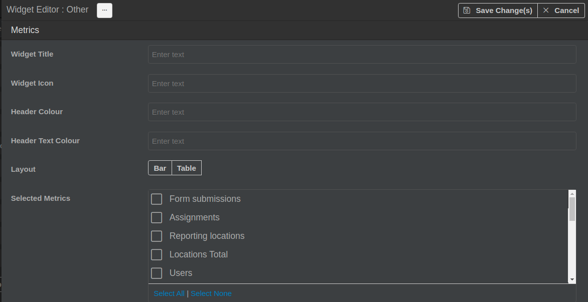
- Populate the fields as follows.
Widget Title: enter a title for the widget. This is visible at the top of the screen.
Widget Icon: enter a widget icon. The icon is visible just before the widget title. (If you want to change the icon, refer to the Tip in topic 17.4 Text widget.)
Header Colour: enter the colour name or hex colour code for the background colour of the header (e.g. (orange)).
Header Text Colour: enter the colour name or hex colour code for the text colour of the header (e.g. #030B0C).
Layout: the layout displays the design in which the metrics are displayed. Choose either of the following layouts:
Bar – metrics data are displayed in a bar layout.
Table – metrics data are displayed in a tabular format.Selected Metrics: this allows you to select the field for which the metric count is to be generated (e.g. form submissions, devices and so on). To select all fields for the metric count, click on Select All.
- Click on Save Change(s).
17.9 Outbreaks widget
Available in: Dashboards, Website Builder
The outbreaks widget allows the user to display an active outbreak list on the website. It is linked to the Outbreaks feature in the main menu.
Fig. 17.6 shows an example of the configured outbreaks widget.
Fig. 17.6. A configured outbreaks widget
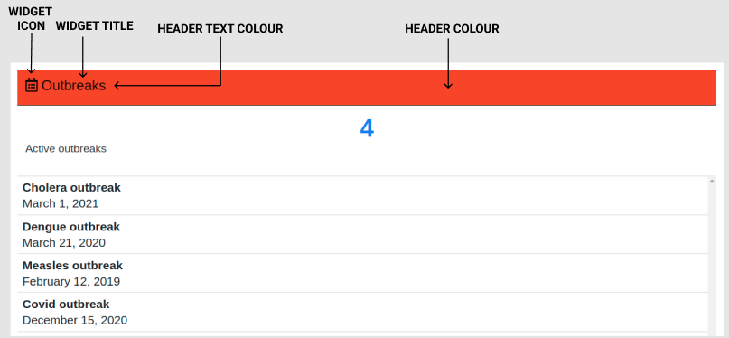
You can view the total count of active outbreaks (e.g. 4) at the top and a list of active outbreak names, along with their start dates, as shown above.
To configure an outbreaks widget, follow the steps below.
Select Menu > Dashboards > click on Create New at the top right-hand corner of the screen.
Drag and drop a Row widget > click on the expand
icon to expand the User category > drag and drop an Outbreaks widget onto the row > click on it, and the widget editor opens, as shown below:
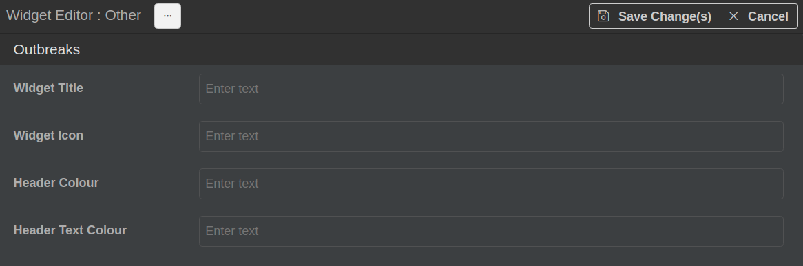
- Populate the fields as follows.
Widget Title: enter a title for the widget. This is visible at the top of the screen.
Widget Icon: enter a widget icon. The icon is visible just before the widget title. (If you want to change the icon, refer to the Tip in topic 17.4 Text widget.)
Header Colour: enter the colour name or hex colour code for the background colour of the header (e.g. (orange)).
Header Text Colour: enter the colour name or hex colour code for the text colour of the header (e.g. #110502).
- Click on Save Change(s).
17.10 Tasks widget
Available in: Dashboards
The tasks widget is a special purpose widget that displays a list of requests (Fig. 17.7). These requests are generally made by the Reporting User, and include:
amendment requests
deletion requests
assignment requests
user account requests.
For more information on tasks and notifications, refer to Chapter 9. User profile, tasks and notifications.
Fig. 17.7. A configured tasks widget
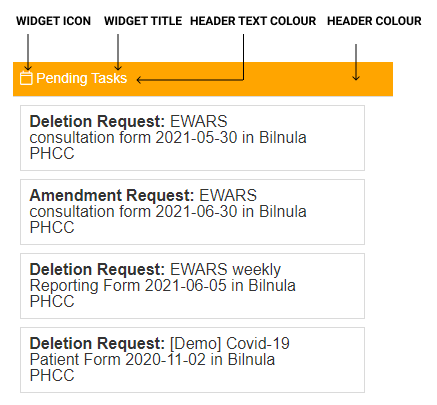
You can view the requests by clicking on any of the above tasks.
To configure a tasks widget, follow the steps below.
Select Menu > Dashboards > click on Create New at the top right-hand corner of the screen.
Drag and drop a Row widget > click on the expand
icon to expand the User category > drag and drop a Tasks widget onto the row > click on it, and the widget editor opens, as shown below:
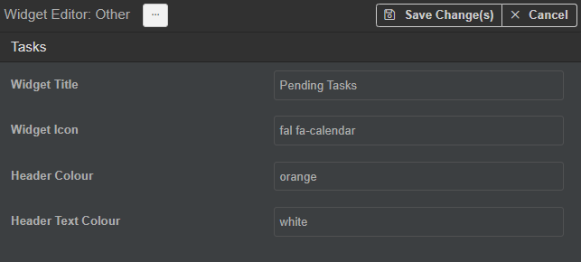
- Populate the fields as follows.
Widget Title: enter a title for the widget (e.g. “Pending Tasks”). This is visible at the top of the screen.
Widget Icon: enter a widget icon. The icon is visible just before the widget title. (If you want to change the icon, refer to the Tip in topic 17.4 Text widget.)
Header Colour: enter the colour name or hex colour code for the background colour of the header (e.g. (orange)).
Header Text Colour: enter the colour name or hex colour code for the text colour of the header (e.g. #fff).
- Click on Save Change(s).
17.11 Assignments widget
Available in: Dashboards
The assignments widget is a special purpose widget that is visible to the Reporting User, but can be configured by the Account Administrator (Fig. 17.8). It allows the Reporting User to view a list of all the assigned reporting forms. Using this widget, the Reporting User can also request assignment of a reporting form.
Fig. 17.8. A configured assignments widget
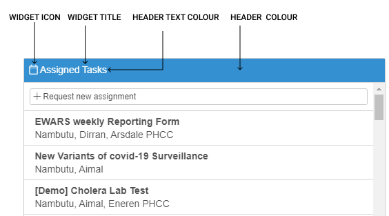
To configure an assignments widget, follow the steps below.
Select Menu > Dashboards > click on Create New at the top right-hand corner of the screen.
Drag and drop a Row widget > click on the expand
icon to expand the User category > drag and drop an Assignments widget onto the row > click on it, and the widget editor opens, as shown below:
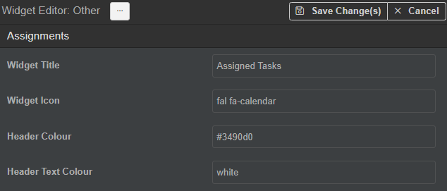
- Populate the fields as follows.
Widget Title: enter a title for the widget (e.g. “Assigned Tasks”). This is visible at the top of the screen.
Widget Icon: enter a relevant widget icon. The icon is visible just before the widget title. (If you want to change the icon, refer to the Tip in topic 17.4 Text widget.)
Header Colour: enter the colour name or hex colour code for the background colour of the header (e.g. (orange)).
Header Text Colour: enter the colour name or hex colour code for the text colour of the header (e.g. #030B0C).
- Click on Save Change(s).
17.12 Overdue reports widget
Available in: Dashboards
The overdue reports widget is a special purpose widget that is visible only to the Reporting User but can be configured only by the Account Administrator (Fig. 17.9). It displays a list of the records/reports for which the reporting due date has been reached but the record has not yet been submitted to the server, grouped by the form name.
Fig. 17.9. A configured overdue reports widget
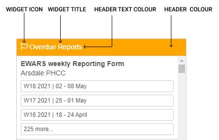
To configure an overdue reports widget, follow the steps below.
Select Menu > Dashboards > click on Create New at the top right-hand corner of the screen.
Drag and drop a Row widget > click on the expand
icon to expand the User category > drag and drop an Overdue Reports widget onto the row > click on it, and the widget editor opens, as shown below:
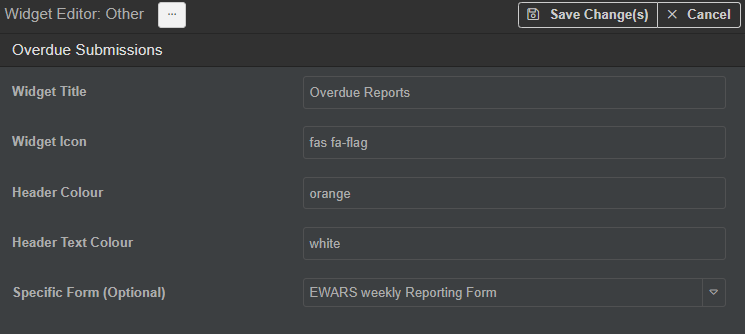
- Populate the fields as follows.
Widget Title: enter a title for the widget (e.g. “Overdue Reports”). This is visible at the top of the screen.
Widget Icon: enter a relevant widget icon. The icon is visible just before the widget title. (If you want to change the icon, refer to the Tip in topic 17.4 Text widget.)
Header Colour: enter the colour name or hex colour code for the background colour of the header (e.g. (orange)).
Header Text Colour: enter the colour name or hex colour code for the text colour of the header (e.g. #fff).
Specific Form (Optional): you can choose a specific form for the widget to display (e.g. Weekly EWARS Reporting Form). If not selected, the widget will display all the overdue records for all the forms, grouped by the form name.
- Click on Save Change(s).
17.13 Documents widget
Available in: Dashboards
The documents widget allows you to display a list of documents on the dashboard. You can open any document from the list. Fig. 17.10 shows an example of a configured documents widget.
Fig. 17.10. A configured documents widget
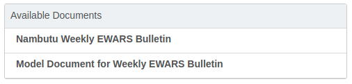
To configure the documents widget, follow the steps below.
Select Menu > Dashboards > click on Create New at the top right-hand corner of the screen.
Drag and drop a Row widget > click on the expand
icon to expand the User category > drag and drop a Documents widget onto the row > click on it, and the widget editor opens, as shown below:
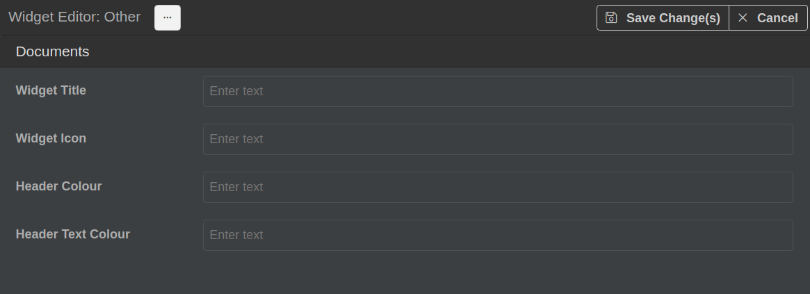
- Populate the fields as follows.
Widget Title: enter a title for the widget (e.g. “Available documents”). This is visible at the top of the screen.
Widget Icon: enter a widget icon. The icon is visible just before the widget title. (If you want to change the icon, refer to the Tip in topic 17.4 Text Widget.)
Header Colour: enter the colour name or hex colour code for the background colour of the header (e.g. (orange)).
Header Text Colour: enter the colour name or hex colour code for the text colour of the header (e.g. #110502).
- Click on Save Change(s).
17.14 Recent submissions widget
Available in: Dashboards
The recent submissions widget is a special purpose widget that displays a list of all submitted records, starting with the most recently submitted record (Fig. 17.11). It displays 10 entries on the screen at a time.
Fig. 17.11. A configured recent submissions widget
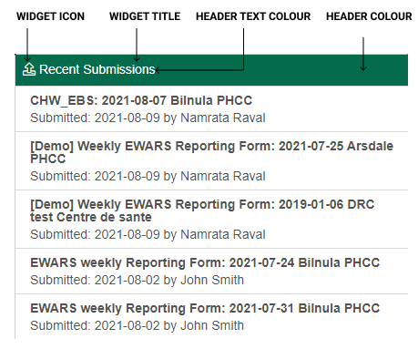
To configure a recent submissions widget, follow the steps below.
Select Menu > Dashboards > click on Create New at the top right-hand corner of the screen.
Drag and drop a Row widget > click on the expand
icon to expand the User category > drag and drop a Recent Submissions widget onto the row > click on it, and the widget editor opens, as shown below:
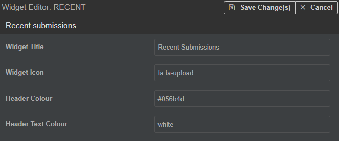
- Populate the fields as follows.
Widget Title: enter a title for the widget (e.g. “Recent Submissions”). This is visible at the top of the screen.
Widget : enter a relevant widget icon. The icon is visible just before the widget title. (If you want to change the icon, refer to the Tip in topic 17.4 Text widget.)
Header Colour: enter the colour name or hex colour code for the background colour of the header (e.g. (orange)).
Header Text Colour: enter the colour name or hex colour code for the text colour of the header (e.g. #fff).
- Click on Save Change(s).
17.15 Activity feed widget
Available in: Dashboards
The activity feed widget is a special purpose widget that displays two types of activities: report submission activity and user registration activity (Fig. 17.12).
Fig. 17.12. A configured activity feed widget, showing report submission and user registration activity
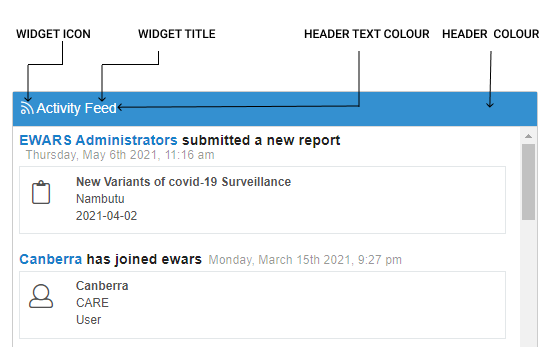
To configure an activity feed widget, follow the steps below.
Select Menu > Dashboards > click on Create New at the top right-hand corner of the screen.
Drag and drop a Row widget > click on the expand
icon to expand the User category > drag and drop an Activity Feed widget onto the row > click on it, and the widget editor opens, as shown below:
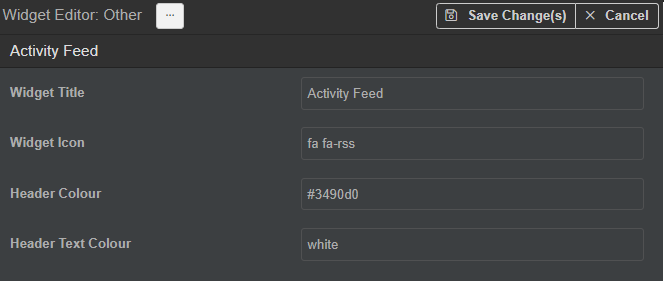
- Populate the fields as follows.
Widget Title: enter a title for the widget (e.g. “Activity Feed”). This is visible at the top of the screen.
Widget Icon: enter a relevant widget icon. The icon is visible just before the widget title. (If you want to change the icon, refer to the Tip in topic 17.4 Text widget.)
Header Colour: enter the colour name or hex colour code for the background colour of the header (e.g. (orange)).
Header Text Colour: enter the colour name or hex colour code for the text colour of the header (e.g. #030B0C).
- Click on Save Change(s).
17.16 Map widget
Available in: Dashboards, Bulletins, Notebooks and Website Builder
The map widget allows the user to add a choropleth map. It can be incorporated into Dashboards, Bulletins, Notebooks and Website Builder.
Fig. 17.13 shows an example of a configured map in a notebook.
Fig. 17.13. A configured map widget in a notebook
To configure a map widget, follow the steps below.
Select Menu > Notebooks > My Notebooks > click on Create Notebook. All the widgets are listed in the left-hand column.
Drag and drop a Row widget > click on the expand
icon to expand the Mapping category > drag and drop a Map widget onto the row > click on it, and the widget editor opens, as shown below:
- Populate the fields as follows.
Title: enter a title for the map. This is visible at the top of the screen.
Location(s): you can limit the source of data for the indicator used in the map by specifying the location source and its sub-options:
Either set Location source as Specific: select a location via the Location drop-down menu (e.g. Nambutu), and data reported from a specific location are considered for the map.
Or set Location source as Of Type: select the location from the Location drop-down menu (e.g. Nambutu) > select location type from the Location Type drop-down menu (e.g. Provinces) > set Location Status as Active, and data reported from the provinces of Nambutu with active status are considered for the map,.
Or set Location source as Location Group(s): select a location group from the drop-down menu (e.g. NGO A) (if you need to select multiple groups, keep selecting from the drop-down menu (e.g. NGO B, NGO C).
Or set Location source as User Location: Once set as this option, only data reported from the User Location are considered.
Query Type: set as Indicator to specify a single indicator, or as Complex to generate a calculated value.
Either set Query Type as Indicator: select the Indicator whose values you want to display in the map from the drop-down menu.
Or set Query Type as Complex: enter an arithmetic formula in the Formula textbox > click on Add Variable > click on the edit icon > enter the variable name (e.g. “Consultations 5 and over”) > select Consultations 5 and over from the Indicator drop-down menu > select the Formula Aggregation Interval (e.g. Week).
Period: select the date range in the From and To drop-down menus or directly from the Quick Ranges menu. The default From and To dates are today.
Thresholds: click on the add icon > enter min and max values for the threshold and specify the colour via the colour picker drop-down menu (e.g. areas with data aggregates in the range 0–100 will be displayed in green, and areas with data aggregates in the range 500–1000 will be displayed in red), as shown below:
The map location is filled with the colour of a threshold whose value is within the specified range.
Legend: set as Show:
Show – the legend is visible.
Hide – the legend is not visible.
Opacity: Enter the opacity of the map. Opacity determines how opaque or transparent a map is. It can take a value from 0.0 to 1.0. The lower the value, the more transparent the map (e.g. 0.5 for 50% transparency).
Base Geometry Colour: choose the base geometry colour (inside the map).
Background Colour: choose the background colour (behind the map).
Stroke Colour: choose the stroke colour (border colour).
Stroke Width: enter the stroke width.
Width: enter the width in pixels, % or em (e.g. 100px, 20% or 300em).
Height: enter the height in pixels, % or em (e.g. 100px, 20% 300em).
Show labels: set as Yes.
Yes – The labels are visible.
No – The labels are not visible.
Labelling style: choose the labelling style (e.g. Default).
Label Font Size (px): enter the font size of the label.
Label Colour: choose the label colour.
Label Threshold (gte): enter the label threshold.
- Click on Save Change(s).
17.17 Alerts map widget
Available in: Dashboards
The alerts map widget is a special purpose widget that allows the user to view the map location of selected alerts (Fig. 17.14). By default, it will display all alerts, irrespective of their stage, stage state or risk factor in two tabs: active and inactive.
Fig. 17.14. A configured alerts map widget
Click on any of the alerts on the map (e.g. Bilnula PHCC) to view the report associated with the alert.
To configure an alerts map widget, follow the steps below.
Select Menu > Dashboards > click on Create New at the top right-hand corner of the screen.
Drag and drop a Row widget > click on the expand
icon to expand the User category > drag and drop an Alerts Map widget onto the row > click on it, and the widget editor opens, as shown below:
- Populate the fields as follows.
Widget Title: enter a title for the widget (e.g. “Consultations Alerts”). This is visible at the top of the screen.
Widget Icon: enter a relevant widget icon. The icon is visible just before the widget title. (If you want to change the icon, refer to the Tip in topic 17.4 Text widget.)
Header Colour: enter the colour name or hex colour code for the background colour of the header (e.g. (orange)).
Header Text Colour: enter the colour name or hex colour code for the text colour of the header (e.g. #030B0C).
Specific Alarm (Optional): select an alarm (e.g. Consultations total).
Alert Stage: select the stage of the Alert Workflow process – Verification/Risk assessment/Risk characterization/Outcome.
Alert Stage State: select the state of the alert stage – Pending/Active/Completed.
Alert Risk: select the risk level of the alert – Low Risk/Moderate Risk/High Risk/Very High Risk.
- Click on Save Change(s).
17.18 Series chart widget
Available in: Dashboards, Bulletins, Notebooks and Website Builder
The series chart widget allows the user to plot time series data using seven different types of visualizations: line, bar, area, scatter, spline and waterfall (Fig. 17.15).
The series chart widget allows the user to add multiple data series, and each series can have the same or different types of visualization.
Fig. 17.15. Examples of configured series charts widgets
| 1. Line | 2. Bar | | | | |
| 3. Scatter | 4. Area | | | | |
| 5. Spline | 6. Waterfall | | | |
To configure the series chart widget, follow the steps below.
Step 1. Configure general settings.
Select Menu > Dashboards > click on Create New at the top right-hand corner of the screen.
Drag and drop a Row widget > click on the expand
icon to expand the Chart Component category > drag and drop a Series chart widget onto the row > click on it, and the widget editor opens, as shown below:
- Populate the fields as follows.
Chart Title [Mandatory]: enter an appropriate chart title (e.g. “Measles Cases in Nambutu”). This is displayed at the top centre of the chart.
Aggregation [Mandatory]: select the aggregation period. Available options are Daily, Weekly, Monthly and Yearly. The aggregation period is used to aggregate the data while plotting the chart. It will be applied to all the data series added to the chart.
Period: select the date range in the From and To drop-down menus or directly from the Quick Ranges menu. The default From and To dates are today.
| Note: if the dataset doesn’t have any corresponding value for that period, nothing is displayed on the chart. |
Title: set as Show. This allows you to display or hide the chart title:
Show – the chart title is visible.
Hide – the chart title is not visible.
Export: set as Show. This controls the visibility of the export button on the chart rendered on the published website. The button allows export of the chart in various file formats, including .pdf, .png, .jpg and .svg:
Show – the export button is visible.
Hide – the export button is not visible.
Zoom: set as Enabled:
Enabled – allows you to zoom into the chart (to see an enlarged view).
Disabled – does not allow you to zoom into the chart.
Navigator: set as Show. Navigator is a small series below the main series, displaying a view of the entire dataset. It provides tools to zoom in and out on parts of the data as well as panning across the dataset:
Show – you can navigate around the timeline.
Hide – you can’t navigate around the timeline.
Legend: set as Show. Legends are used to explain the chart. They display the series in a chart with a predefined symbol and name:
Show – the legend is visible.
Hide – the legend is not visible.
Y Axis title: set Y axis title as Show > enter a title for the Y axis in the Y Axis title textbox.
Y Axis format: select an appropriate format from the drop-down menu (e.g. 0.00) to set the format of the Y axis value.
Decimals: set as Show. Decimals control whether the value of the Y axis tick can be in decimals or not:
Show – the Y axis tick value is in decimals.
Hide – the Y axis tick value is not in decimals.
Max. Y value: Specify the maximum value of Y axis ticks. If left empty, the maximum value is automatically calculated based on the data and the period specified. If it is set, the axis may be extended beyond the data range.
Y Axis interval: specify the interval of the tick marks in axis units.
X Axis title: set as Show > enter a title for the X axis in the X Axis title textbox.
X Axis labels: set as Show. This controls the visibility of the labels on the X axis:
Show – the labels on the X axis are displayed.
Hide – the labels on the X axis are hidden.
X Axis interval: specify the interval of the tick marks in axis units.
X Axis label rotation: enter the degree of rotation for the X axis labels (e.g. 10). The X axis labels are rotated by the degree entered here.
Chart width: enter the chart width. You can specify the chart width in different formats, including pixels, % and em.
Chart height: enter the chart height. You can specify the chart height in different formats, including pixels, % and em.
Stacked: set to Enabled. Once enabled, the values of each series are stacked on top of each other.
Step 2. Configure the data tab.
- Click on the Data tab > click on Add Series, and a new series is added. Click on the edit
 icon of the new series, and the screen below appears:
icon of the new series, and the screen below appears:
- Populate the fields as follows.
Title: enter a title for the data series. If left empty, the indicator name is used as a title.
Location Specification: you can limit the source of data for the indicator used in the series by specifying the location source and its sub-options:
Either set Location Specification as Specific Location: select a location via the location drop-down menu (e.g. Nambutu), and data reported from a specific location are considered for the series.
Or set Location Specification as Generator: select the location whose Child location needs to be selected by the generator from the Generator parent location drop-down menu (e.g. Nambutu) > select location type from the Generator location type drop-down menu (e.g. Provinces) > set Location Status as Active, and data reported from the provinces of Nambutu with active status are considered for the series.
Or set Location Specification as Group(s): select a location group from the drop-down menu (e.g. NGO A) > set Group Output as Aggregate. If set as Aggregate, the system performs group-wide aggregation of the data and displays data for each group. If set as Individual, the system performs location-wide aggregation of the data and displays data for each location of the group.
Or set Location Specification as User’s Location: once set as this option, only data reported from the User’s Location are considered.
Data Source: you can set Data Source as Indicator for a single indicator, or as Complex to generate a calculated value:
Either set Data Source as Indicator > select the Indicator whose values you want to display in the chart from the drop-down menu.
Or set Data Source as Complex > enter an arithmetic formula in Formula textbox > click on Add Variable > click on the edit icon > enter the variable name (e.g. “Consultations 5 and over”) > select Consultations 5 and over from the indicator drop-down menu.
Period: set as Inherit:
Inherit – takes the period specified in the chart settings tab.
Override – does not take the period specified in the chart settings tab but it takes the data period specified in the fields below this option.
Style: select an appropriate visualization type (e.g. bar, line, spline).
Colour: select an appropriate colour from the drop-down menu (if Style is selected as Line, the line’s colour changes to the colour chosen in this field). The colour of the line and tooltip border will change. The default colour is white.
Line Width: enter the line width of the chart, in pixels. The default width is 2.
Line Style: select an appropriate line style from the drop-down menu (e.g. dot). The Line Style option is available only for a line chart.
Marker Radius: enter the radius of the point marker (e.g. 10).
Marker style: set the marker style as Square. Marker style is the shape or symbol of the marker. Available options are Circle, Square, Diamond, Triangle and Triangle-Down.
- Add another series using the steps above, if required.
- Click on Save Change(s).
17.19 Pyramid chart widget
Available in: Dashboards, Bulletins, Notebooks and Website Builder
The pyramid chart widget allows you to configure a pyramid chart on the website. This is divided into horizontal sections and is used to represent hierarchies.
Fig. 17.16 shows an example of a configured pyramid chart widget.
Fig. 17.16. A configured pyramid chart widget
To configure the pyramid chart widget, follow the steps below.
Step 1. Configure general settings.
- Select Menu > Dashboards > click on Create New at the top right-hand corner of the screen.
- Drag and drop a Row widget > click on the expand icon to expand the Chart Component category > drag and drop a Pyramid chart widget onto the row > click on it, and the widget editor opens.
- Populate the fields as follows.
- Chart Title [Mandatory]: enter an appropriate chart title (e.g. “Measles Cases in Nambutu”). This is displayed at the top centre of the chart.
| Note: to display the title on the chart, Title must be set as Show under Controls. |
Aggregation [Mandatory]: select the aggregation period. Available options are Daily, Weekly, Monthly and Yearly. The aggregation period is used to aggregate the data while plotting the chart. It will be applied to all the data series added to the chart.
Cumulative: set as Yes to apply a sum.
Group by Indicators: set as Yes. If set as Yes, you should add more than one data series to the chart. For each series added, a layer of the pyramid is displayed. If set as No, the feature is disabled, and you should not add more than one series in the Data tab. If more than one is added if Group by Indicators is set as No, the system will consider the first one and ignore the rest of the series.
Period: select the date range in the From and To drop-down menus or directly from the Quick Ranges menu. The default From and To dates are today.
| Note: if the dataset doesn’t have any corresponding value for that period, nothing is displayed on the chart. |
Title: set as Show. This allows you to display or hide the chart title:
Show – the chart title is visible.
Hide – the chart title is not visible.
Export: set as Show. This controls the visibility of the export button on the chart rendered on the published website. The button allows export of the chart in various file formats, including .pdf, .png, .jpg and .svg:
Show – the export button is visible.
Hide – the export button is not visible.
Zoom: set as Enabled:
Enabled – allows you to zoom into the chart (to see an enlarged view).
Disabled – does not allow you to zoom into the chart.
Navigator: set as Show. Navigator is a small series below the main series, displaying a view of the entire dataset. It provides tools to zoom in and out on parts of the data as well as panning across the dataset:
Show – you can navigate around the timeline.
Hide – you can’t navigate around the timeline.
Legend: set as Show. Legends are used to explain the chart. They display the series in a chart with a predefined symbol and name:
Show – the legend is visible.
Hide – the legend is not visible.
Chart width: enter the chart width. You can specify the chart width in different formats, including pixels, % and em.
Chart height: enter the chart height. You can specify the chart height in different formats, including pixels, % and em.
Step 2. Configure the data tab.
- Click on the Data tab > click on Add Series, and a new series is added. Click on the edit icon of the new series, and the screen below appears:
- Populate the fields as follows.
Title: enter a title for the data series. If left empty, the indicator name is used as a title.
Location Specification: you can limit the source of data for the indicator used in the series by specifying the location source and its sub-options:
Either set Location Specification as Specific Location: select a location via the location drop-down menu (e.g. Nambutu), and data reported from a specific location are considered for the series.
Or set Location Specification as Generator: select the location whose Child location needs to be selected by the generator from the Generator parent location drop-down menu (e.g. Nambutu) > select location type from the Generator location type drop-down menu (e.g. Provinces) > set Location Status as Active, and data reported from the provinces of Nambutu with active status are considered for the series.
Or set Location Specification as Group(s): select a location group from the drop-down menu (e.g. NGO A) > set Group Output as Aggregate. If set as Aggregate, the system performs group-wide aggregation of the data and displays data for each group. If set as Individual, the system does location-wide aggregation of the data and displays data for each location of the group.
Or set Location Specification as User’s Location: once set as this option, only data reported from the User’s Location are considered.
Data Source: you can set Data Source as Indicator for a single indicator, or as Complex to generate a calculated value:
Either set Data Source as Indicator > select the Indicator whose values you want to display in the chart from the drop-down menu.
Or set Data Source as Complex > enter an arithmetic formula in the Formula textbox > click on Add Variable > click on the edit icon > enter the variable name (e.g. “Consultations 5 and over”) > select Consultations 5 and over from the indicator drop-down menu.
Period: set as Inherit:
Inherit – takes the period specified in the chart settings tab.
Override – does not take the period specified in the chart settings tab, but it takes the data period specified in the fields below this option.
Add another series using the steps above, if required.
Click on Save Change(s).
17.20 Category widget
Available in: Dashboards, Bulletins, Notebooks and Website Builder
The category widget allows the user to visualize categorical variables in a pie, donut, arc or bar chart.
Fig. 17.17 shows examples of configured category widgets.
Fig. 17.17 Examples of configured category widgets
| Pie chart (default) | Donut chart | | | | |
| Arc chart | Bar chart | | | |
To configure the category widget, follow the steps below.
- Select Menu > Dashboards > click on Create New at the top right-hand corner of the screen.
Step 1. Configure general settings.
Drag and drop a Row widget > click on the expand
icon to expand the Chart Component category > drag and drop a Category chart onto the row > click on it, and the widget editor opens, as shown below:Populate the fields as follows.
- Chart Title [Mandatory]: enter an appropriate chart title (e.g. “Measles Cases in Nambutu”). This is displayed at the top centre of the chart.
| Note: to display the title on the chart, Title must be set as Show under Controls. |
Sample Interval [Mandatory]: select one of the intervals. Available options are Daily, Weekly, Monthly and Yearly (for example, if you select Weekly, the chart is rendered against weekly aggregated data).
Group by Indicators: set as Yes. If set as Yes, you should add more than one data series to the chart. For each series added, a layer of the chart is displayed. If set as No, the feature is disabled, and you should not add more than one series in the Data tab. If more than one is added if Group by Indicators is set as No, the system will consider the first one and ignore the rest of the series.
Period: select the date range in the From and To drop-down menus or directly from the Quick Ranges menu. The default From and To dates are today.
| Note: if the dataset doesn’t have any corresponding value for that period, nothing is displayed on the chart. |
Chart Title: set as On. This control allows you to display or hide the chart title:
On – the chart title is visible.
Off – the chart title is not visible.
Legend: set as Show. Legends are used to explain the chart. They display the series in a chart with a predefined symbol and name:
Show – the legend is visible.
Hide – the legend is not visible.
Chart Style: Select an appropriate visualization type. Different types of visualizations are Default (Pie), Donut, Arc and Bar Graph.
- For the Bar Graph visualization type, configure the following:
Y Axis label: enter a label for the Y axis (e.g. “Number of cases”).
Y Axis format: select an appropriate format from the drop-down menu (e.g. 0.00) to set the format of the Y axis value.
Y Axis decimals: set as Show. Decimals control whether the value of the Y axis tick can be in decimals or not:
Show – the Y axis tick value is in decimals.
Hide – the Y axis tick value is not in decimals.
Slice Ordering: select slice ordering based on title or values (e.g. value ascending).
Width: enter the width value (e.g. 300) > select the format (e.g. px).
Height: enter the height value (e.g. 500) > select the format (e.g. px).
Slices with no data: set to Show to display slices with no data, or set to Hide to hide slices with no data.
Step 2. Configure the data tab.
- Click on the Data tab > click on Add Category, and a new series is added. Click on the edit icon of the new series, and the screen below appears:
- Populate the fields as follows.
Slice Label: enter a label for the slice. This appears at the top of the slice.
Colour: Select a colour from the drop-down menu. The slice is displayed in the selected colour.
Location Specification: You can limit the source of data for the indicator that is used in the series by specifying the location source and its sub-options:
Either set Location Specification as Specific Location: select a location via the location drop-down menu (e.g. Nambutu), and data reported from a specific location are considered for the series.
Or set Location Specification as Generator: select the location whose Child location needs to be selected by the generator from the Generator parent location drop-down menu (e.g. Nambutu) > select location type from the Generator location type drop-down menu (e.g. Provinces) > set Location Status as Active, and data reported from the provinces of Nambutu with active status are considered for the series.
Or set Location Specification as Group(s): select a location group from the drop-down menu (e.g. NGO A) > set Group Output as Aggregate. If set as Aggregate, the system performs group-wide aggregation of the data and displays data for each group. If set as Individual, the system performs location-wide aggregation of the data and displays data for each location of the group.
Or set Location Specification as User’s Location: once set as this option, only data reported from the User’s Location are considered.
Data Source: you can set Source Type as Indicator for a single indicator, or as Complex to generate a calculated value:
Either set Source Type as Indicator > select the Indicator whose values you want to display in the chart from the drop-down menu > select Reduction Type to apply Sum or Average/Median to the indicator values.
Or set Source Type as Complex > enter an arithmetic formula in the Formula textbox > click on Add Variable > click on the edit icon > enter the variable name (e.g. “Consultations 5 and over”) > select Consultations 5 and over from the indicator drop-down menu.
Period: set as Inherit.
Inherit – takes the period specified in the chart settings tab.
Override – does not take the period specified in the chart settings tab but it takes the data period specified in the fields below this option.
- Click on Save Change(s).
17.21 Table widget
Available in: Bulletins, Notebooks and Website Builder
The table widget allows the user to display location-wise tabular data. By default, it adds columns for the location and parent location names. After that, user-defined columns are displayed in the order specified.
Fig. 17.18 shows an example of a configured table widget in a notebook.
Fig. 17.18. A configured table widget in a notebook
To configure a table widget in Notebooks, Bulletins and Website Builder, follow the steps below.
Select Menu > Notebooks > My Notebooks > click on Create Notebook. All the widgets are listed in the left-hand column.
Drag and drop a Table widget onto the middle section > click on it, and the widget editor opens, as shown below:
- Populate the fields as follows.
Title: enter a name for the table.
Location Specification: you can limit the source of data for the indicator that is used in the table by specifying the location source and its sub-options:
Either set Location Specification as Specific Location: select a location via the location drop-down menu (e.g. Nambutu), and data reported from a specific location are considered for the table.
Or set Location Specification as Generator: select the location whose child location needs to be selected by the generator from the Generator parent location drop-down menu (e.g. Nambutu) > select location type from the Generator location type drop-down menu (e.g. Provinces) > set Location Status as Active, and data reported from the provinces of Nambutu with active status are considered for the series.
Or set Location Specification as Group(s): select a location group from the drop-down menu (e.g. NGO A) > set Group Output as Aggregate. If set as Aggregate, the system performs group-wide aggregation of the data and displays data for each group. If set as Individual, the system performs location-wide aggregation of the data and displays data for each location of the group.
Or set Location Specification as User’s Location: once set as this option, the data reported from the User’s Location are considered.
Column Header: set as Show. This controls the visibility of the column heading:
Show – the column heading is visible.
Hide – the column heading is hidden.
Additional Class Name: enter the name of the Cascading Style Sheets (CSS) class. You can apply styling through the CSS class, and this is defined in the CSS settings.
Hide rows with 0 or no data: set as Yes:
Yes – rows with 0 or no data in all cells are hidden.
No – rows with 0 or no data in all cells are not hidden.
Sorting column: you can specify the order by column name from the drop-down menu (e.g. Location Name Asc.).
Limit rows: this allows you to limit the table rows while rendering the table. Provide the maximum row count to be displayed (e.g. 10). If more rows of data than the maximum value specified here are available, the rest of the rows are ignored.
Step 2. Configure the data tab.
Click on the Data tab > click on Add Column, and a new column is added. Click on the edit
icon of the new column, and the screen below appears:
- Populate the fields as follows.
Title: enter a title for the column.
Data Source: set Source Type as Indicator for a single indicator, or as Complex to generate a calculated value:
Either set Source Type as Indicator > select the Indicator whose values you want to display in the table from the drop-down menu > select Reduction to apply Sum or Avg. (Average/Median) to the indicator values.
Or set Source Type as Complex: enter an arithmetic formula in the Formula textbox > click on Add Variable > click on the add
icon > enter the variable name (e.g. “Consultations 5 and over”) > select Consultations 5 and over from the indicator drop-down menu.Period: select the date range in the From and To drop-down menus or directly from the Quick Ranges menu. The default From and To dates are today.
Value Formatting: choose the formatting style of the value (e.g. 0.00).
Prefix: enter a prefix for the value that will be concatenated with it accordingly.
Suffix: enter a suffix for the value that will be concatenated with it accordingly.
Value Colouring: once enabled, you can provide value colouring ranges. Click on the add icon > enter min and max values for the range and specify the colour via the colour picker drop-down menu, as shown below:
The value is displayed with the colour of the Value range whose criteria are satisfied.
- Value Mapping: once enabled, instead of the original value, the mapped value is displayed. Click on the add icon > enter min and max values for the range and specify the mapped value. Each value mapping range has two number inputs and a textbox for a mapped value.
- Click on Save Change(s).
Please note that designing tables (shading columns, borders) requires HTML coding. If you are not familiar with HTML, please contact the EWARS Super Administrator for support.
17.22 Menu widget
Available in: Website Builder
This section assumes that you have already created a website for your account. Refer to Chapter 22. Website Builder for more information on how to do this.
The menu widget provides page navigation capability for a website. It enables the user to create main menu and submenu items, which need to be linked to the relevant pages. These pages are displayed between the header and footer sections on the website. The menu is displayed horizontally.
It is recommended that the menu widget should be configured in the header section so that it appears at the top of the page.
Fig. 17.19 shows an example of what a configured menu widget looks like on a published website.
Fig. 17.19. A configured menu widget on a published website
To configure a Menu widget, follow the steps below.
Step 1. Configure general settings.
Select Menu > Website Builder. Click on the edit icon next to any of the websites.
Drag and drop a Row widget > drag and drop a Menu widget onto the row > click on it, and the widget editor opens, as shown below:
Step 2. Add a menu item to the menu bar.
- Click on Add Menu, and a menu is added > click on the add icon > enter a Menu Title (e.g. “EWARS Technical Guidance”) > select a page from Page drop-down menu to link to the menu (e.g. Technical Guidance), as shown below:
Step 3. Add a submenu item inside a menu item.
- Enable the Secondary Menu? option > click on Add Menu Items, and a submenu item is added. Click on the edit icon in the submenu > enter a Menu Item Name > select the page to link to the submenu item name (e.g. Homepage), as shown below:
- Click on Save Change(s).
17.23 Text widget in Website Builder
Available in: Website Builder
The text widget is used to display textual content on a webpage. Fig. 17.20 shows an example of what a text widget looks like on a published website.
Fig. 17.20. A configured text widget on a published website
To configure an text widget on the website, follow the steps below.
Select Menu > Website Builder. Click on the edit icon next to any of the websites.
Drag and drop a Row widget > click on the expand
icon to expand the Content category > drag and drop a Text widget onto the row > click on it, and the widget editor opens, as shown below:
- Populate the fields as follows.
Content: enter a relevant paragraph of text.
Text Font Size: enter the font size for the text (e.g. 14px). The default font size is set as 12 pixels.
Text Colour: enter the colour for the text in (hex code or RGB or the name of the colour). For example, for the colour red, you can enter the hex value 0xFF0000, or RGB (255, 0, 0) or the name “red”.
Letter Spacing: enter the spacing for the text (e.g. 2). This increases or decreases the space between the letters in a text. The default value is 1.
Line Height: enter the line height (e.g. 10). This specifies the vertical distance between the lines of text by adding space above and below the lines. Negative values are not allowed. If left blank, the default spacing is used by the system. The ideal size for line height is 15–20.
Text Style: choose any of the given styles. Available options are Bold, Italic and Underline. The default value is no text style selected. You can select one or more styles. To select all styles, click on Select All.
Margin: enter the margin (e.g. 12). This creates white space around the text. The default is 10. This field accepts both positive and negative values. A positive value places it away from its parent container, while a negative value places it closer to the parent container.
- Click on Save Change(s).
17.24 Image widget in Website Builder
Available in: Website Builder
The image widget in Website Builder lets you add an image to a website. It also allows you to set up a heading for the image if needed, and this heading can also be given under the image description. Fig. 17.21 shows an example of what the image widget looks like on a published website.
Fig. 17.21. A configured image widget on a published website
To configure an image widget, follow the steps below.
- Drag and drop a Row widget > click on the expand icon to expand the Content category > drag and drop an Image widget onto the row > click on it, and the widget editor opens, as shown below:
- Populate the fields as follows.
Image URL [Mandatory]: you can either upload the image from your local drive or add the link to the image directly:
Either upload an image from your local drive: click on the upload icon to upload a new image saved on your laptop/desktop. It is uploaded as web content, and the newly created URL is populated automatically in the textbox beside it. It is important to ensure that the image is already properly sized for display on a webpage. Providing a very large image at high resolution may slow down delivery of the webpage to end-users.
Or add the link to the image directly: copy and paste an existing URL or type the URL manually into the textbox. The address specified must resolve to a publicly accessible image. The image file is not copied to EWARS, but remains in its source location. EWARS fetches it when displaying it on the page.
Note: there is an inherent risk in this approach – if you choose a URL to a location that you don’t control (for example, if you reference an image on another website or via a search engine) and if that image is ever removed by its owner, it will disappear from EWARS.Link URL and link action: if you want to allow a web user to download a file or to be redirected to any other website by clicking on the image, follow the steps below.
Either configure the image to open a website or webpage in a new window or tab (e.g. once the user clicks on this image, it redirects to http://who.int): set Link Action as Redirect and enter the Link URL of the website/webpage that is to be opened. For example, if the Link URL is set as https://www.who.int, when you click on the image, the WHO webpage opens.
Or configure the image to download a file: select Link Action as Download > enter the Link URL for a file that is to be downloaded > enter an Image Description for the image (this appears as a heading at the top of the image) > enter the Frame Width (in px) of the image container (e.g. 600) > enter the Frame Height (in px) of the image container (e.g. 400) (this is the sum of image height and image heading in pixels) > enter the Opacity of the image (this determines how opaque or transparent an image is – it can take a value from 0.0 to 1.0, and the lower the value, the more transparent the image (e.g. 0.5 for 50% transparency) > enter a Box Shadow for the image (this attaches one or more shadows to an image – it takes a value in the format x-offset y-offset blur spread colour (e.g. 1px 1px 1px 1px #333) > enter a Margin (in px) for the image (this creates extra space around the image with respect to the parent container): enter the value of the space that you want around the image (e.g. 10, -10, 20, -20). This accepts both positive and negative values. A positive value places it away from its parent container, while a negative value places it closer to the parent container.
- Click on Save Change(s).
17.25 Enhanced table widget
Available in: Dashboards, Bulletins, Notebooks and Website Builder
The enhanced table widget is an enhanced version of the table widget. The primary advantage of using this widget is improvement in performance while loading the widget. Fig. 17.22 shows an example of a configured enhanced table widget in a notebook.
Fig. 17.22. A configured enhanced table widget in a notebook
To configure an enhanced table widget, follow the steps below.
Step 1. Configure general settings.
Select Menu > Notebooks > My Notebooks > click on Create Notebook. All the widgets are listed in the left-hand column.
Drag and drop a Row widget > drag and drop an Enhanced Table widget onto the middle section > click on it, and the widget editor opens, as shown below:
- Populate the fields as follows.
Title: enter a name for the table.
Source: You can limit the data for the indicator used in the table by specifying the source and its sub-options:
Either set Source as Forms: only data reported from Forms and their related indicators will be considered. To consider data reported from a specific form, select Specific Form under Source form > select the form name from the Select Form drop-down menu (e.g. Weekly EWARS Reporting Form) > set Apply condition on fields as Yes > select the form field from the drop-down menu (e.g. Under 5 cases [AWD]) > select a Condition from the drop-down menu, (e.g. Is equal to) > enter the number in the box (e.g. 10). To add another condition, click on the add icon and repeat the steps above. After adding multiple conditions, if you want all conditions to be true, select All from the drop-down menu or select Any if you want any one of the conditions to be true.
Or set Source as Alerts: only data reported from Alerts and their related indicators will be considered. To consider data reported from specific alarms, set Source Alarm as Selected Alarms > select one or more alarms from the Select Alarms drop-down menu (e.g. Cholera, Measles).
Or set Source as Performance indicators: only data reported from performance indicators (i.e. System indicators > Form Submissions > timeliness, completeness, etc.) will be considered.
Group by: this allows you to group the data based on Time Interval, Reporting Location, Location type or Form field. Note: grouping by Form field is only available for a Source set as Forms; grouping by Alert Data is only available for a Source set as Alerts. You can select any one, according to your requirements:
Either set Group by as No Grouping: if this is selected, no grouping is performed on the data.
Or set Group by as Time Interval: select a suitable interval. Available options are Day, Week, Month and Year. For example, if the selection is Week, the table shows weekly data.
Or set Group by as Reporting Location: data are grouped on the basis of the locations from which they were reported – for example, you can use this to form a group using all the reporting locations in Nambutu for the weekly EWARS reporting form.
Or set Group by as Location type: select a suitable location type (e.g. Provinces) from the Location Type drop-down menu. For example, if the selection is Provinces, the data are grouped on the basis of the available province.
Or set Group by as Locations: select one or more locations (e.g. Aimal, Dirran, Jobrar) from the Select Locations drop-down menu. For example, if you select Aimal and Dirran, the data are grouped for only those locations.
Or set Group by as Location Group(s): the data are grouped on the basis of the location group. Select All in the Groups field if you want to group data for all the available groups. If you want to group data for specific groups only, select Selected in the Groups field and select one or more groups from the Location Group(s) drop-down menu.
Or set Group by as Form field: select a form name from the Select Form drop-down menu (e.g. Weekly EWARS Reporting Form) > select an appropriate field from the Form field drop-down menu (e.g. Morbidity and Mortality: Acute Watery Diarrhoea (AWD): Under 5 cases). The data are grouped on the basis of the selected form field.
Or set Group by as Alert Data: select an appropriate option from the Column drop-down menu (e.g. Alarm Name). The data are grouped on the basis of the name of the alarm.
Column Title: enter a name for the Group by column.
Show totals: set as Enabled:
Enabled – the sum of an entire column is visible in the last row.
Disabled – the sum of an entire column is not visible.
Location Spec.: you can limit the source of data for the indicator used in the widget by specifying the location source:
Either set Location spec. as Specific Location: select a location via the location drop-down menu (e.g. Nambutu). The data reported from a specific location are considered.
Or set Location spec. as Locations: select one or more locations via the select locations drop-down menu (e.g. Aimal, Dirran). The data reported from all added locations are considered.
Or set Location spec. as Location Group(s): select a location group from the drop-down menu (e.g. NGO A, NGO B). The data reported from any added groups are considered.
Or set Location spec. as User’s Location: once set as this option, only data reported from the User’s Location are considered.
Period: select the date range in the From and To drop-down menus or directly from the Quick Ranges menu. The default From and To dates are today.
Value Aliasing: set to Enabled. This allows you to display an alias name for each cell of the Group by column. Note: this function is available every time you aggregate data by a group – it is applicable to all data aggregation groups except No Grouping. If No Grouping is selected, value aliasing will not appear for you to enable the function.
Enabled – value aliasing is performed. For example, if you want to display Aimal as Province 1 and Dirran as Province 2 > click on Fetch to display the cell values of the Group by column > enter “Province 1” under Alias for Aimal and “Province 2” under Alias for Dirran. Value aliasing also allows you to hide any row from the table. For example, if you want to hide the first row, click on the Exclude box in the first row with the original value Aimal > click on Save Change(s). The first row is excluded from the table.
Disabled – value aliasing is not performed.
Hide rows with 0 or no data: set as Yes:
Yes – rows with 0 or no data in all cells are hidden.
No – rows with 0 or no data in all cells are not hidden.
Sorting column: you can specify the order by column name from the drop-down menu (e.g. Location Name Asc).
Limit rows: this allows you to limit table rows while rendering. Provide the maximum row count to be displayed (e.g. “10”). If more rows of data than the maximum value specified here are available, the rest of the rows are ignored.
Column Header: set as Show. This controls the visibility of the column heading:
Show – the column heading is visible.
Hide – the column heading is hidden.
Table CSS Class: enter the name of the CSS class. You can apply styling through the CSS class, and it is defined in the CSS settings.
Step 2. Configure the data tab.
- Click on the Data tab > click on Add Column, and a new column is added. Click on the edit icon of new column, and the screen below appears:
- Populate the fields as follows.
Title: enter a title for the column.
Description: enter a description for the column.
Source Type: you can set Source Type as Indicator for a single indicator, or as Complex to generate a calculated value:
Either set Source Type as Indicator: select the Indicator whose values you want to display in the table from the drop-down menu. For example, if you want to display all the alerts triggered for the Measles alarm within 72 hours, set Indicator source as System > select Alerts > select Measles from the Alarm drop-down menu > select Alerts Triggered from the Dimension drop-down menu > select the appropriate event from the Likely Event drop-down menu > select Verified within from the Include drop-down menu > enter “72” in the No. of hours box.
Or set Source Type as Complex: enter an arithmetic formula in the Formula textbox > click on Add Variable > click on the edit
icon > enter the variable name (e.g. “Consultations 5 and over”) > select Consultations 5 and over from the Indicator drop-down menu.Period: set to Inherit:
Inherit – takes the period specified in the table settings tab.
Override – does not take the period specified in the table settings tab but takes the data period specified in the fields below this option.
Hide This Column: set as No. This control allows you to display or hide the column in the table:
No – the column is visible.
Yes – the column is not visible.
Value Formatting: choose the formatting style of the value (e.g. 0.00).
Prefix: enter a prefix for the value that will be concatenated with it accordingly.
Suffix: enter a suffix for the value that will be concatenated with it accordingly.
Value Mapping: once enabled, instead of the original value, the mapped value is displayed. Click on the add icon > enter min and max values for the range and specify the mapped value. Each value mapping range has two number inputs and a textbox for a mapped value.
Similarly, add another column if required.
- Click on Save Change(s).
17.26 Enhanced map widget
Available in: Dashboards, Bulletins, Notebooks and Website Builder
The enhanced map widget allows the user to add a choropleth map. It is an enhanced version of the map widget. The primary advantage of using this widget is improvement in performance while loading the widget.
Fig. 17.23 shows an example of a configured enhanced map widget in a notebook.
Fig. 17.23. A configured enhanced map widget in a notebook
To configure an enhanced map widget, follow the steps below.
Select Menu > Notebooks > My Notebooks > click on Create Notebook. All the widgets are listed in the left-hand column.
Drag and drop a Row widget > click on the expand
icon to expand the Mapping category > drag and drop an Enhanced map widget onto the row > click on it, and the widget editor opens, as shown below:
- Populate the fields as follows.
Title: enter a title for the map.
Display by: select the location type for which you want to display the map. For example, if you want to display a map for the provinces of Nambutu, select Provinces from the Display by drop-down menu.
Location spec.: you can limit the source of data for the indicator used in the map by specifying the location source and its sub-options:
Either set Location spec. as Specific Location: select a location via the Location drop-down menu (e.g. Nambutu), and the data reported from a specific location are considered for the map.
Or set Location spec. as Locations: select one or more locations (e.g. Aimal, Dirran, Jobrar) from the Select Locations drop-down menu. For example, if you select Aimal and Dirran, only the data reported from those locations are considered.
Or set Location spec. as Location Group(s): select one or more groups from the Location Group(s) drop-down menu. For example, if you select NGO A and NGO B, only the data reported from those location groups are considered.
Or set Location spec. as User’s Location: once set as this option, only the data reported from the User’s Location are considered.
Query Type: you can set Query Type as Indicator for a single indicator, or as Complex to generate a calculated value:
Either** set Query Type as Indicator: select the Indicator whose values you want to display in the map from the drop-down menu.
Or set Query Type as Complex: enter an arithmetic formula in the Formula textbox > click on Add Variable > click on the edit icon > enter the variable name ( e.g. “Consultations 5 and over”) > select Consultations 5 and over from the Indicator drop-down menu > select a Formula Aggregation Interval (e.g. Week).
Period: select the date range in the From and To drop-down menus or directly from the Quick Ranges menu. The default From and To dates are today.
Thresholds: click on the add icon > enter min and max values for the threshold and specify the colour via the colour picker drop-down menu, as shown below:
The map location is filled with the colour of a threshold whose value is within the specified range.
Legend: set as Show:
Show – the legend is visible.
Hide – the legend is not visible.
Base Geometry Colour: choose the base geometry colour (inside the map).
Hover colour: choose the hover colour. When you hover over a particular region on the map, its colour changes.
Background colour: choose the background colour (behind the map).
Stroke colour: choose the stroke colour (border colour).
Stroke width: enter the stroke width.
Width: enter the width in pixels, % or em (e.g. 100px, 20% or 300em).
Height: enter the height in pixels, % or em (e.g. 100px, 20% or 300em).
Show Labels: Set as Yes.
Yes – The labels are visible.
No – The labels are not visible.
Label Font Style(px): enter the font size of the label.
Label Colour: choose the label colour.
Label Threshold (gte): Enter the label threshold.
- Click on Save Change(s).
17.27 Carousel widget
Available in: Website Builder
The carousel widget is a slideshow of images in a single section on your website. It allows the user to display slides consisting of images, with optional descriptions. It can automatically change the display images with or without text after a predefined number of seconds, or they can be changed manually.
Fig. 17.24 shows an example of what a configured carousel widget looks like on a published website.
Fig. 17.24. A configured carousel widget on a published website
To configuring a carousel widget, follow the steps below.
Select Menu > Website Builder. Click on the edit icon next to any of the websites.
Drag and drop a Row widget > drag and drop a Carousel widget onto the row > click on it, and the widget editor opens, as shown below:
- Populate the fields as follows.
Width: enter an image width in percentage (e.g. 50). The default is 100%, and this matches the width of the cell.
Height: enter the image height in percentage (e.g. 50). The default is 100% and this matches the height of the cell.
Allow Autoplay: once enabled, the images automatically change within the interval defined, or you need to click to view the slideshow of images one by one.
Interval: enter the image rollover interval. The default is 3 seconds.
By default, two images are added, but you can add more images via the following steps.
- Click on Add Images, and the screen below appears:
- Click on the edit icon, and the Image URL and Image Text options below appear:
Note: to upload any image, the image needs to be stored in your computer or uploaded to web content in EWARS. You should not directly copy an image URL from the web.
Follow the steps below to upload preferred images to web content, where all images will be stored.
- Select Menu > Web Content > click on Upload Files > enter the Folder Path (e.g. Images) > click on Upload > double-click on the image file, and it is uploaded.
Once you have uploaded the image in web content, follow the instructions below to add the image URL to the carousel widget.
Enter the URL of the uploaded image > enter a caption that describes the image in Image Text. This caption is displayed at the bottom centre of the image.
Click on Save Change(s).
To delete an image, click on the delete icon.
17.28 Video widget
Available in: Website Builder
You can add videos to the website using the video widget. The video you want to add needs to be uploaded on YouTube already.
Fig. 17.25 shows an example of what the configured video widget looks like on a published website.
Fig. 17.25. A configured video widget on a published website
To configure a video widget, follow the steps below.
Select Menu > Website Builder. Click on the edit icon next to any of the websites.
Drag and drop a Row widget > click on the expand
icon to expand the Content category > drag and drop a Video widget onto the row > click on it, and the widget editor opens, as shown below:
- Populate the fields as follows.
Video URL [Mandatory]: enter the URL of a YouTube video. You can copy and paste the URL of the YouTube video or type the URL into the textbox manually. The video should be publicly accessible (In case of sensitive/private material, it is not advisable to share).
Frame Width (in px): enter the width of the video container in pixels (e.g. 600).
Frame Height (in px): enter the height of the video container in pixels (e.g. 400).
Opacity: enter the opacity of the video. This determines how opaque or transparent a video is. It can take a value from 0.0 to 1.0. The lower the value, the more transparent it is: 1 indicates fully opaque and 0 indicates fully transparent (e.g. 0.5 for 50% transparency).
Box Shadow: enter a box shadow for the video – this attaches one or more shadows to an element. It takes a value in the format x-offset y-offset blur spread colour (e.g. 1px 1px 1px 1px #333).
- Click on Save Change(s).
17.29 HTML widget
Available in: Dashboards and Website Builder
You can use the HTML widget when you want to add multiple content like text, images charts and maps in a single block. You can add these individually too, but the HTML widget provides flexibility to style and format them using CSS. It is a powerful way to add content, but at the same time it requires knowledge of HTML and CSS.
| Note: the HTML widget allows direct editing of HTML/CSS, so any errors or inconsistencies could lead to display issues on the webpage. |
To configure an HTML widget, follow the steps below.
Select Menu > Dashboards > click on Create New at the top right-hand corner of the screen.
Drag and drop a Row > click on the expand
icon to expand the Content category > drag and drop an HTML widget onto the row > click on it, and the widget editor screen opens, as shown below:
For demonstration purposes, this guide uses the following example.
Example 1. Add an image and a map inside an HTML widget.
- Click on the image icon, and the popup screen below appears:
- Populate the fields as follows.
URL: enter the image URL.
Alternative Text: enter alternative text. If the image does not exist at the specified URL, the text entered here is shown.
Width: enter the image width in pixels (e.g. 100).
Height: enter the image height in pixels (e.g. 100).
Border: enter the border for an image in pixels.
HSpace: enter space in pixels. this adds horizontal space to the left and right of an image.
VSpace: enter space in pixels. This adds vertical space to the top and bottom of an image.
Alignment: select Left from the drop-down menu.
Left – the image is aligned to the left.
Right – image is aligned to the right.
- Click on OK > click on Save Change(s).
To add a map widget inside the HTML widget, follow the steps below.
- Place the cursor where you want to insert the widget > click on > select Map widget, and the widget is added, as shown below:
Double-click on it, and the map widget configuration screen opens.
Configure it > click on Save Change(s).
17.30 Document widget
Available in: Website Builder
This allows you to display EWARS bulletins on the website, as shown in the example of a configured document widget below:
In the screenshot above, you can see a yearly list of documents generated for the document template and can switch between years by clicking on it.
You can download the document by clicking on the PDF  icon.
icon.
To view the document, click on it and it opens in a new browser window/tab.
To subscribe/unsubscribe to a document using this widget on a public website, follow the steps below.
- Click on Subscribe, and the popup window below appears:
- Enter your email address > click on Subscribe.
Once the subscribed document is generated, the system will email it automatically. An Unsubscribe link is available in all subsequent documents emailed to you. You can click on the link to unsubscribe from the document.
To configure a document widget, follow the steps below.
Select Menu > Website Builder. Click on the edit icon next to any of the websites.
Drag and drop a Row widget > click on the expand
icon to expand the Other category > drag and drop a Documents widget onto the row > click on it, and the widget editor opens, as shown below:
- Select the template from the drop-down menu for which documents are to be displayed (e.g. Weekly EWARS bulletin) > click on Save Change(s).
17.31 Documents list widget
Available in: Website Builder
The documents list widget allows you to list all the available documents for the account and subscribe to them.
Fig. 17.26 shows an example of a configured documents list widget.
Fig. 17.26. A configured documents list widget
To configure a documents list widget, follow the steps below.
Select Menu > Website Builder. Click on the edit icon next to any of the websites.
Drag and drop a Row widget > click on the expand
icon to expand the Other category > drag and drop a Documents list widget on the row > click on it, and the widget editor opens, as shown below:
- Populate the fields as follows.
Widget Title: enter a title for the widget (e.g. “Documents list”).
Widget Icon: enter a widget icon. The icon is visible just before the widget title. (If you want to change the icon, refer to the Tip in topic 17.4 Text widget.)
Header Colour: enter the colour name or hex colour code for the background colour of the header (e.g. (orange)).
Header Text Colour: enter the colour name or hex colour code for the text colour of the header (e.g. #0C0105).
- Click on Save Change(s).
| Contac |
t the EWARS Super Administrator for help and support on different widgets and their configuration. |
The following chapter explores the Notebooks feature in EWARS. Notebooks can be created using different widgets, enabling you to explore various visualization possibilities for data in the system. This feature is valuable for your analysis and data sharing needs.